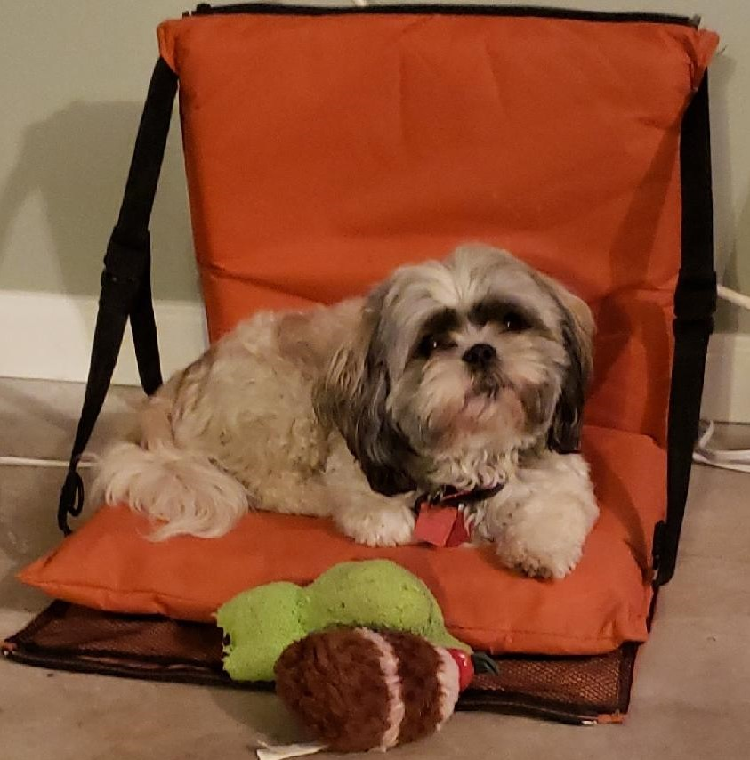

My name is Victoria. I am a dual major student IT at ACC in Cyber security, and Network Administration. I am a direct decendent of the eldest member of the Takelma Tribe, and a soon-to-be member of the Confederate Tribes of Siletz Indians in Siletz, Oregon. My Great Great Great Grandfather George Harney was the first, and only elected chief of the Confederated Tribes of Siletz.
I love reading. My favorite books are The Hitchhiker's Guide to the Galaxy, Ender's Game, and The Outsiders. I'm a video game lover. My favorite games are American McGee's Alice, Alice: Madness returns, World of Warcraft, and Star Wars: The Old Republic. I am a huge Star Wars fan. I have a Shih-Tzu named Mookiee, which is Ewokeese for a female Wokling.
